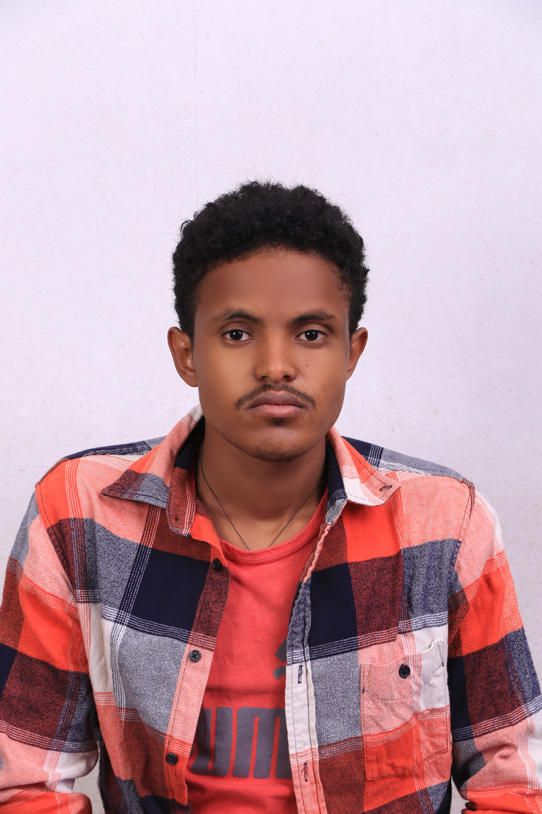
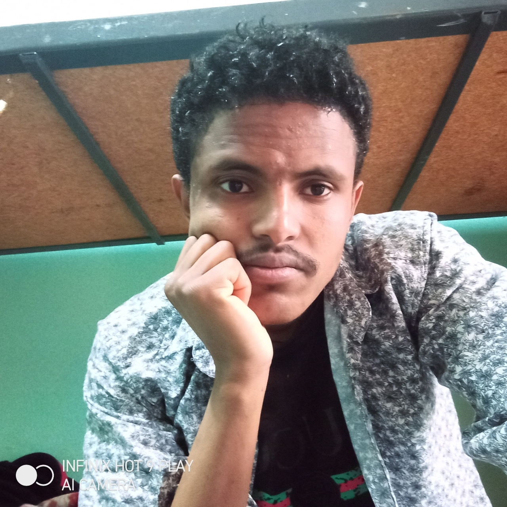

About Me
 I’m Dawit, a passionate student currently studying at the School of Information and Technology Engineering, Addis Ababa University. Alongside my studies, I work as a freelance web developer and data analyst, blending my academic knowledge with real-world projects to deliver impactful solutions.
My Journey
My journey in tech began during two transformative summers at AddisCoder, where I delved into Python and web development. These experiences laid the foundation for my skills and inspired my passion for solving problems through technology. Since joining Addis Ababa University, I’ve been building on that foundation, exploring deeper aspects of information technology and engineering.
What Drives Me
 I’m deeply motivated by the work I do. Problem-solving and design are not just skills I practice but passions that bring me immense satisfaction. Whether it’s tackling a technical challenge or finding innovative ways to improve user experiences, I’m always eager to rise to the occasion.
Beyoned Tech
Education is a cause close to my heart—I truly believe in its power to change the world. That’s why I currently tutor lower-grade students, sharing my knowledge and contributing to their growth. In my free time, I dive into psychology books, fueled by a curiosity to understand human behavior and a desire to help others improve their lives.
Looking Ahead
My mission is to continue leveraging technology to solve real-world problems and make a difference. Whether through building efficient web solutions, analyzing complex data, or exploring how education and technology intersect, I’m excited about the journey ahead.